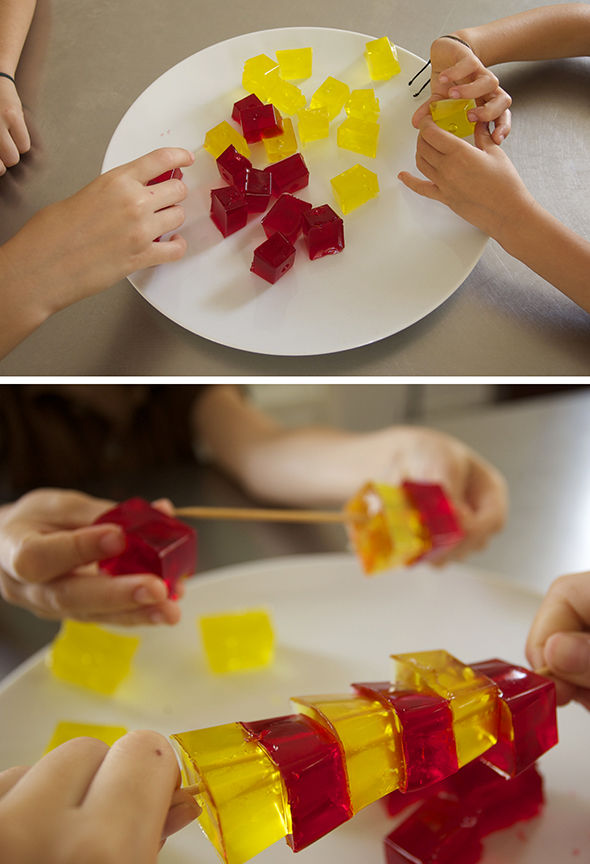

You get this if you let the jelly to cool down in ice cube molds. Hannah and Noah have tried hard to build ... quite difficult. They also can be pierced with skewers.




Lollies do it yourself Use cookie shapes and press the powdered sugar around it. Carefully removed the shapes. In a nonstick pan heat sugar and a…
Read more →


A slice of ice cut by a cookie mold. Michelin dessert for kids!
Read more →
This collector of figs is a construction of Felipe. Noah and Elvira quickly put into practice.
Read more →